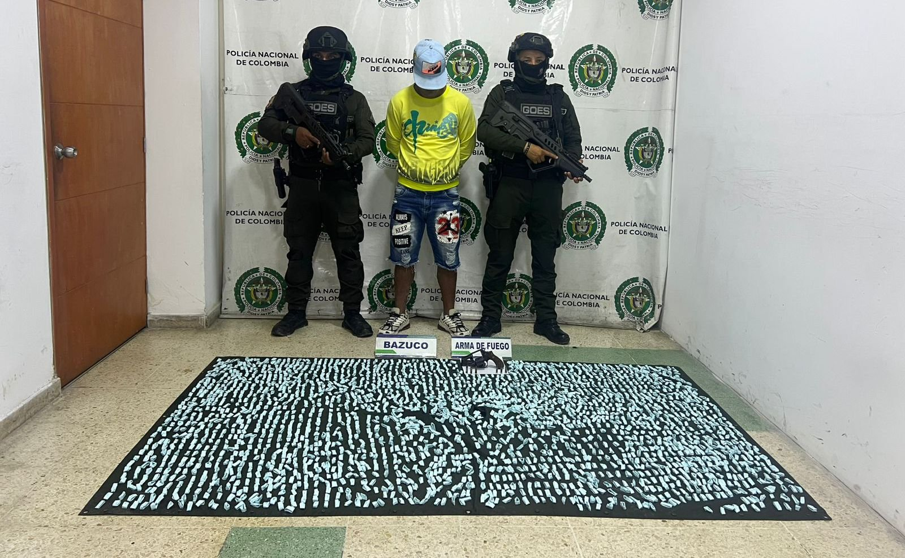

Detienen en Bucaramanga hombre que custodiaba punto de microtráfico
#Colombia | En un operativo del Grupo de Operaciones Especiales (GOES), la Policía Nacional capturó a Euglis José Molletones Área, alias “Mojón” o “El Veneco”, señalado de custodiar un punto de microtráfico dentro del túnel del barrio Café Madrid, al norte de Bucaramanga.
Durante la intervención, los uniformados incautaron un revólver calibre 38 con seis cartuchos y 3.000 dosis de estupefacientes derivados de la cocaína, con un avalúo superior a los 6 millones de pesos colombianos.
Las autoridades confirmaron que el detenido cuenta con dos anotaciones previas por delitos contra la salud pública y que era una pieza clave en las estructuras criminales que controlan el tráfico local en la zona. Su rol consistía en vigilar el expendio desde el interior del túnel, un lugar estratégico por su difícil acceso y escasa visibilidad.
Alias “Mojón” fue puesto a disposición de la Fiscalía General de la Nación, donde enfrentará cargos por tráfico de estupefacientes, porte ilegal de armas y concierto para delinquir.